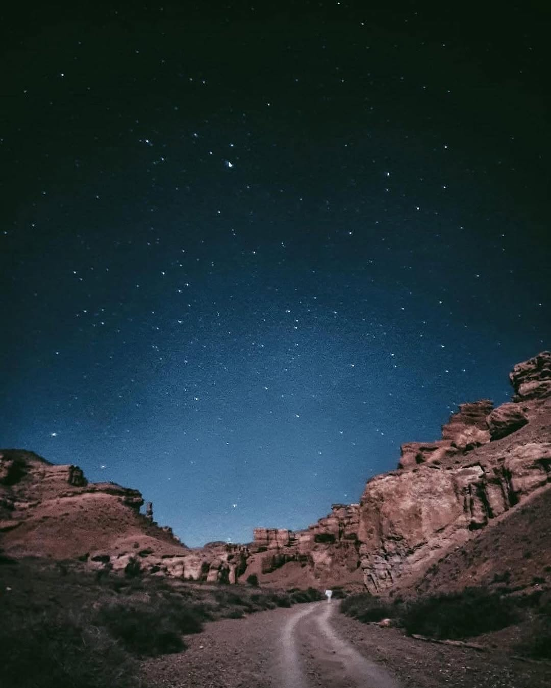
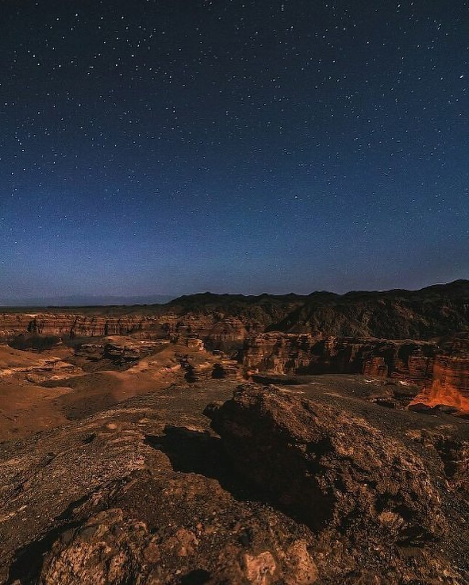
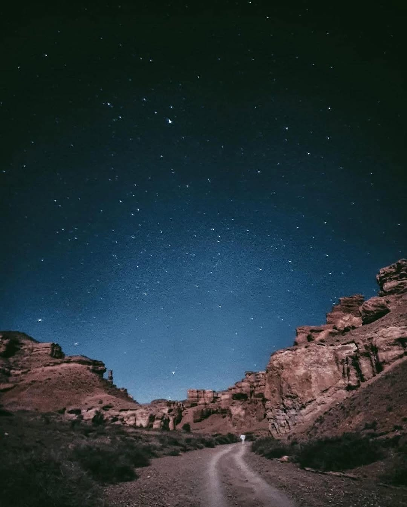
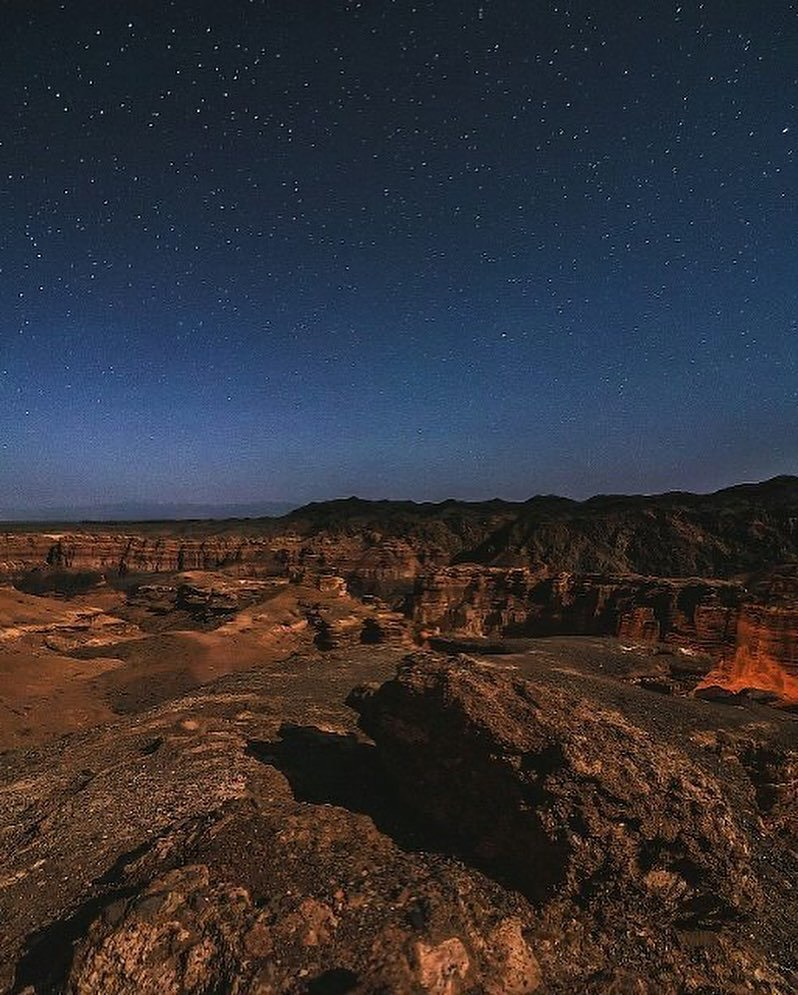
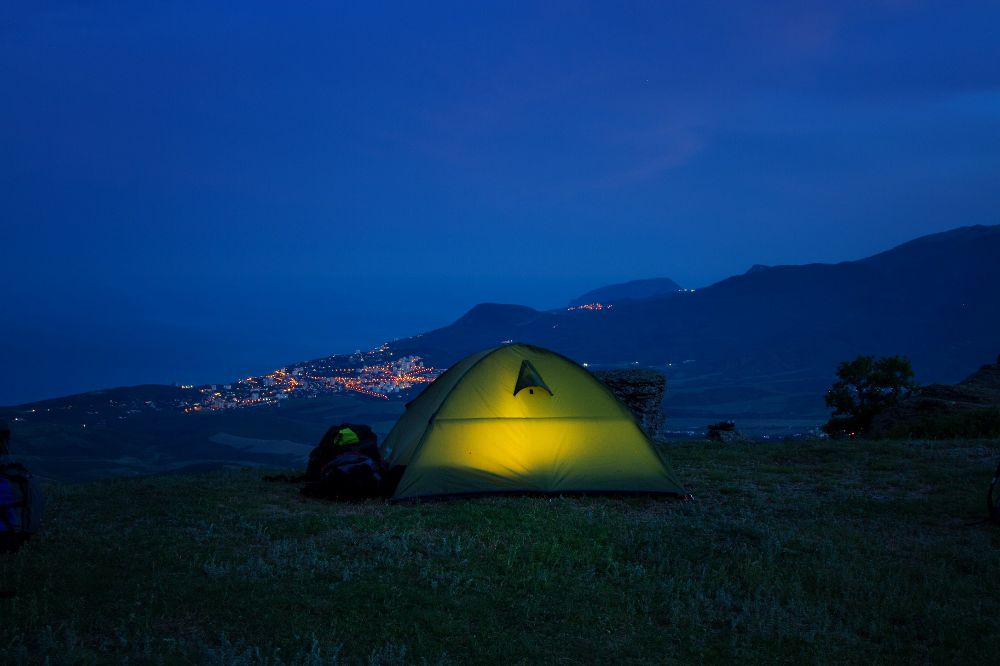
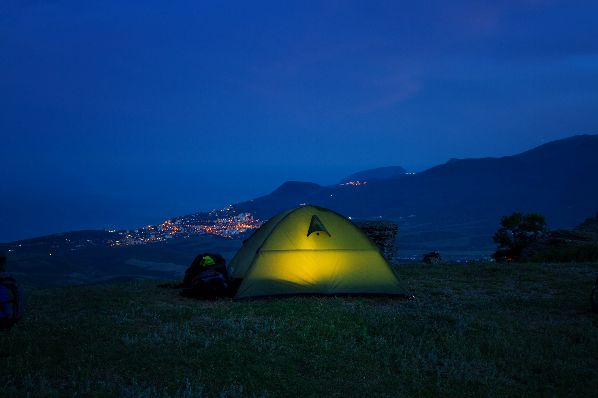

Night Trips
ТВОИ НОЧНЫЕ ПРИКЛЮЧЕНИЯ НАЧИНАЮТСЯ ЗДЕСЬ
Ощути магию ночного приключения!
Путешествия на рассвете — это классика.
Но ночные туры по казахстанским каньонам — это совершенно иной уровень эмоций.
Темные силуэты скал, мерцающие звезды над головой и таинственные тропы ждут тебя.
Л
И
С
Т
А
Й

 



 


